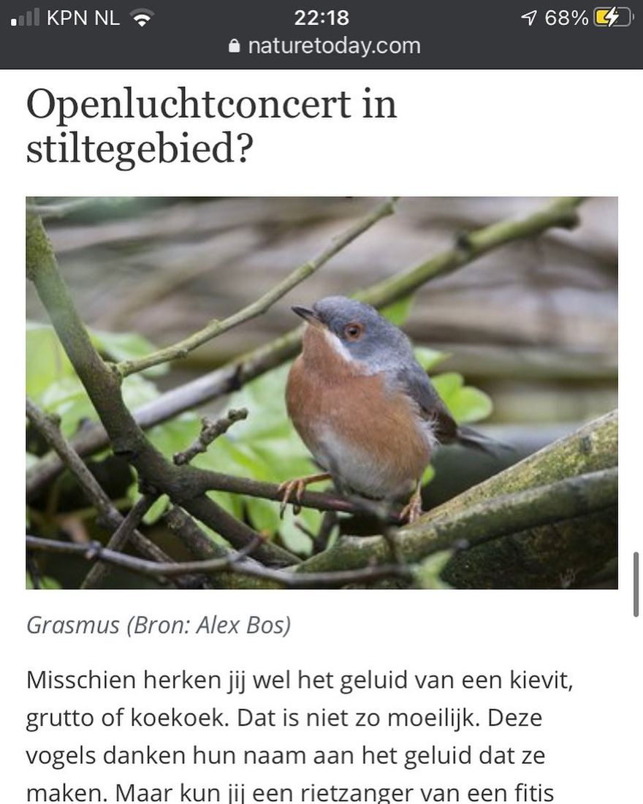

Westelijke baardgrasmus, geen grasmus
2 januari 2021 · Nature Today
- Op de foto
- Westelijke baardgrasmus
- Het ging over
- Grasmus

Welkom @naturetodaynl op onze pagina! Een mooie primeur met deze Westelijke baardgrasmus die in het voorjaar van 2016 in Wageningen zat. Zeker geen normale Grasmus dus die @alex.bos.82 destijds op de foto heeft gezet 😉